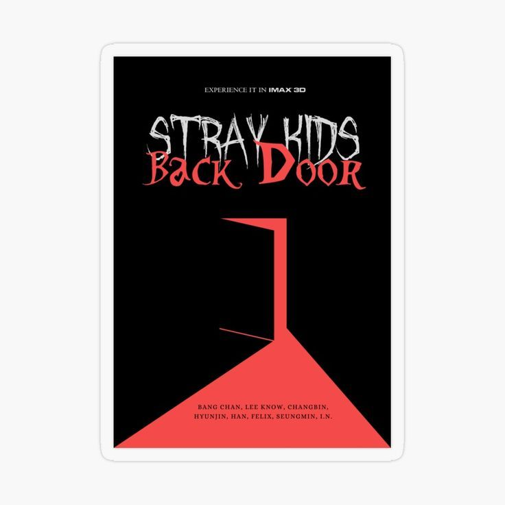
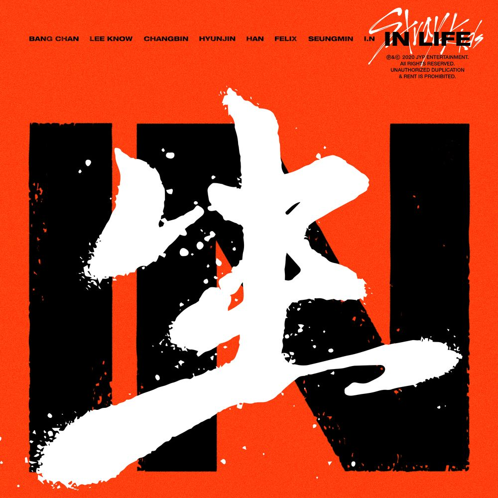

|
 |
El año 2020 trajo el primer álbum de estudio de Stray Kids, Go Live, lanzado el 17 de junio junto al sencillo "God's Menu",
una de las canciones más representativas del grupo hasta la fecha. El álbum se convirtió en su primer trabajo certificado platino.
Meses después, el 14 de septiembre, llegó la reedición In Life, con "Back Door" como tema principal. Ese mismo año, Stray Kids hizo también su debut musical en Japón con el álbum compilatorio SKZ2020, abriendo las puertas a su expansión internacional. |
| Periodo | Junio - Septiembre 2020 |
| Álbum | Go Live (17 de junio de 2020) - 1er álbum de estudio |
| Sencillo principal | God's Menu |
| Reedición | In Life (14 de septiembre de 2020) - "Back Door" |
